PW04 — оригінальні кадри
16.11.2026 · Samsung A54/API 36 та окремий Pixel_6 AVD/API 36. Автоматичний збір, без редагування оригіналів. Зелений маркер — позначені test providers Києва; справжня приватна позиція не зберігалася.
Підписи, типи джерел і межі доказів · П'ять SDK snapshots · Результати перевірок
approximatePermissionThroughSystemDialog
denyTwiceThenOpenOwnSettingsAndReturn
 12-permission-denial-dialog.png13-permission-denied-app.png14-permission-permanently-denied-app.png
12-permission-denial-dialog.png13-permission-denied-app.png14-permission-permanently-denied-app.png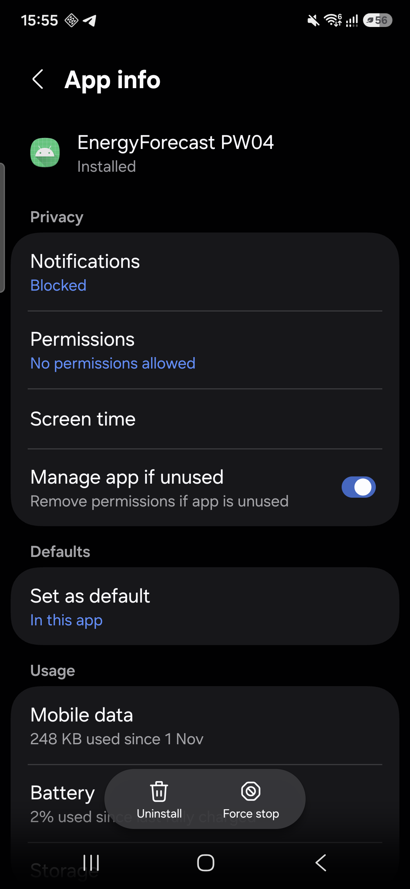
15-own-app-settings.pnggeneral-absent
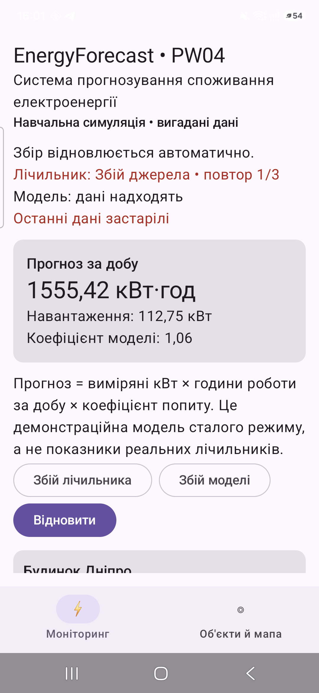
20-meter-retrying.png20-model-retrying.png21-meter-recovered.png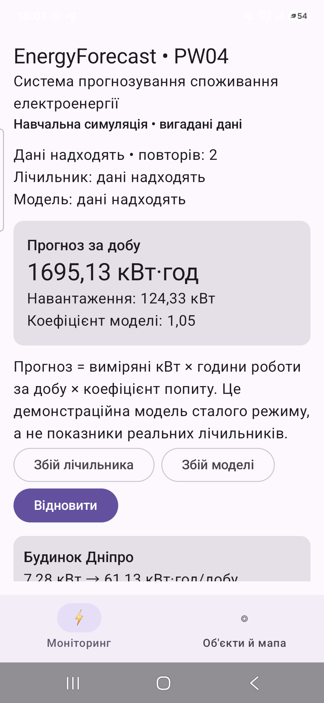
21-model-recovered.png22-invalid-range.png23-sort-date-asc.png23-sort-date-desc.png23-sort-forecast-asc.png23-sort-forecast-desc.png23-sort-name-asc.png23-sort-name-desc.png23-sort-power-asc.png23-sort-power-desc.png23-sort-status-asc.png23-sort-status-desc.png23-sort-type-asc.png23-sort-type-desc.png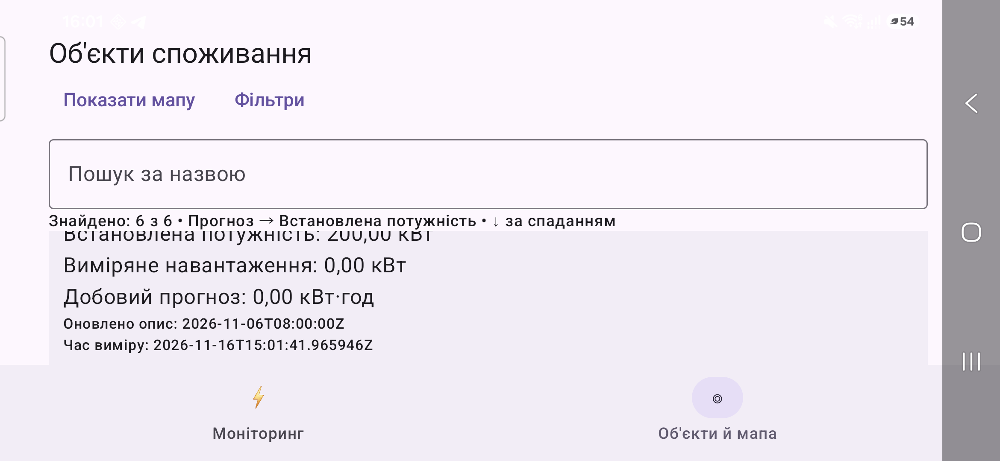
24-landscape.png25-portrait-restored.png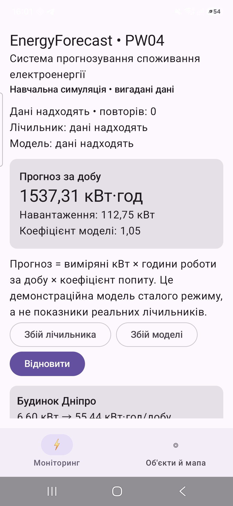
01-monitor-live.png02-catalog-no-key.png03-filter-panel.png04-filtered-office.png05-details-top.png06-details-bottom.png07-empty-search.pnggeneral-valid
20-meter-retrying.png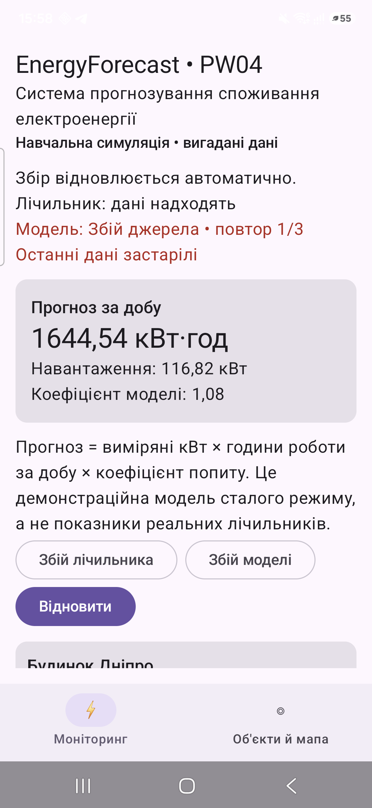
20-model-retrying.png21-meter-recovered.png21-model-recovered.png22-invalid-range.png23-sort-date-asc.png23-sort-date-desc.png23-sort-forecast-asc.png23-sort-forecast-desc.png23-sort-name-asc.png23-sort-name-desc.png23-sort-power-asc.png23-sort-power-desc.png23-sort-status-asc.png23-sort-status-desc.png23-sort-type-asc.png23-sort-type-desc.png24-landscape.png25-portrait-restored.png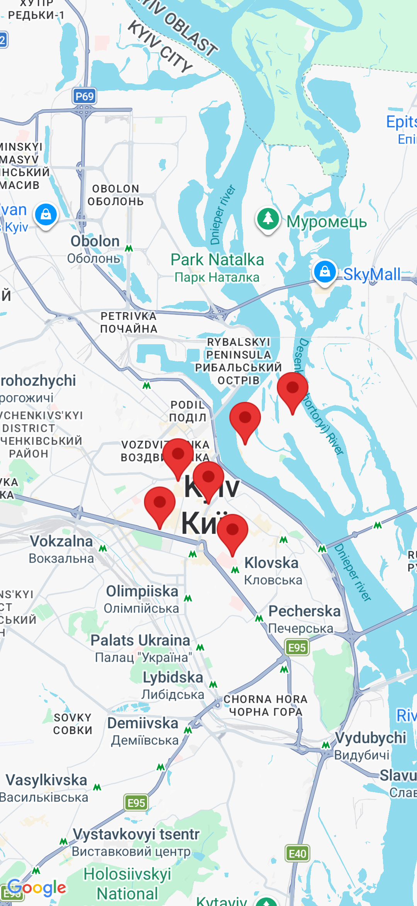
01-map-loaded.png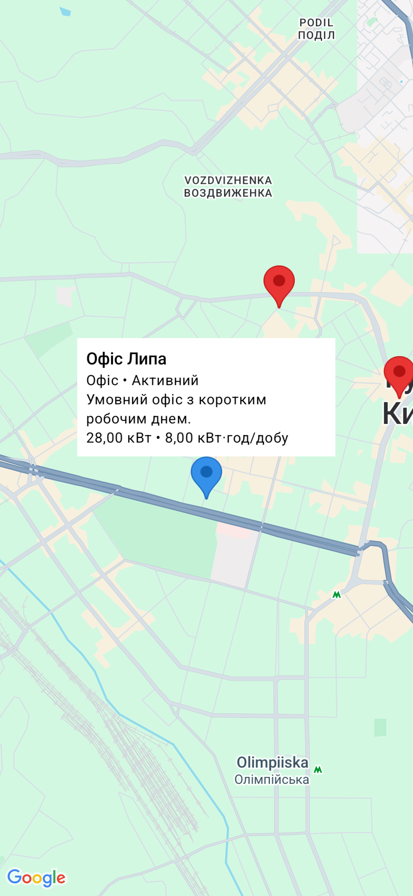
02-marker-selected.png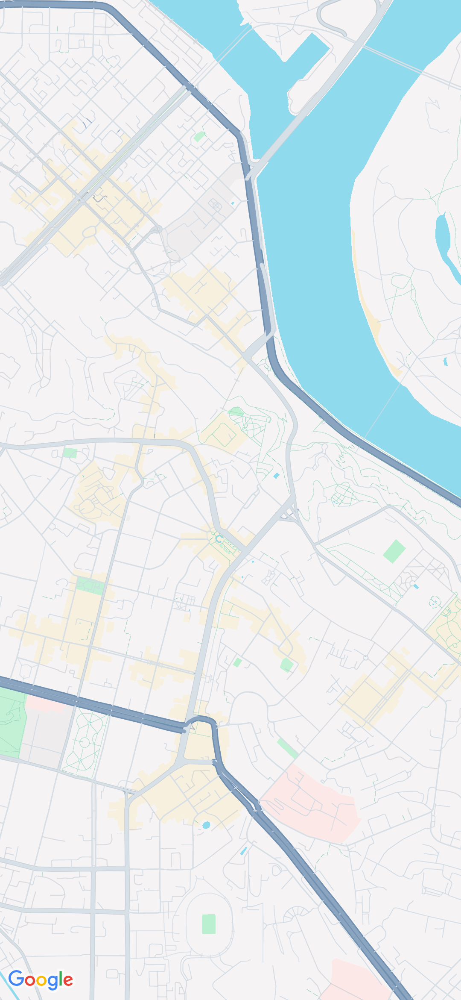
03-camera-refocused.png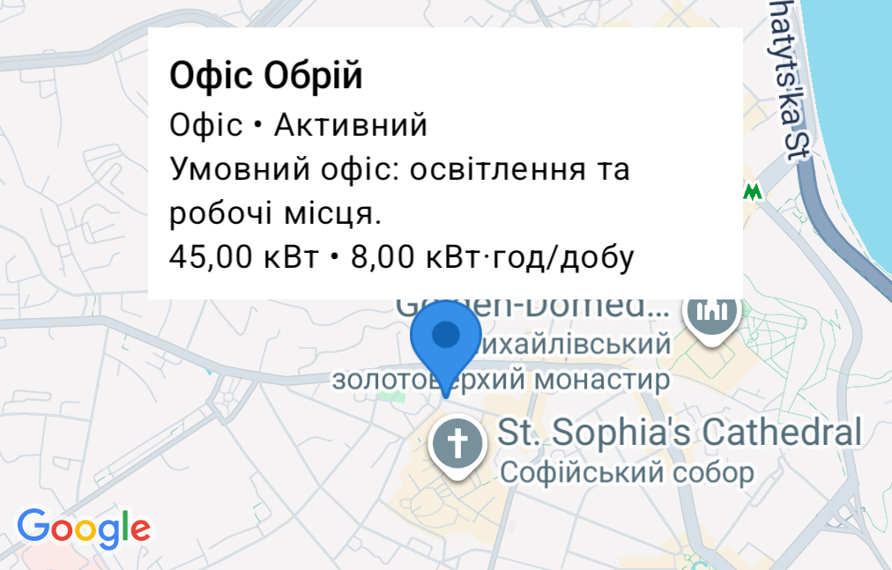
04-filtered-map.png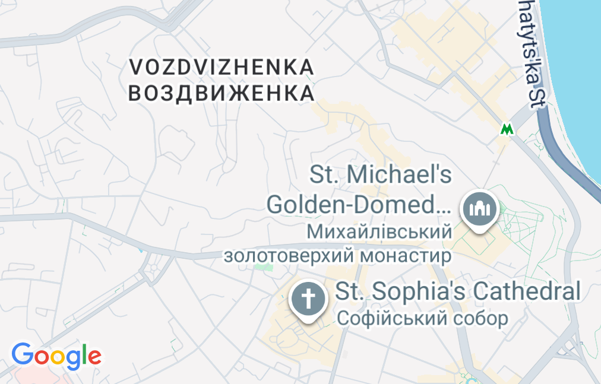
05-empty-map.png invalid-key-retry
40-invalid-key-map-failed.png41-invalid-key-map-retrying.png42-invalid-key-catalogue-still-usable.png location-disabled-settings
precisePermissionThroughSystemDialog
revokedPermissionIsRecheckedOnNewActivity
16-permission-revoked-app.png services-unavailable-emulator
synthetic-position-ui
30-labelled-synthetic-position.png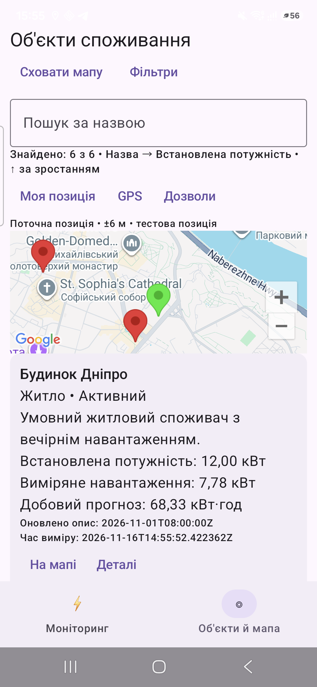
31-labelled-position-updated.png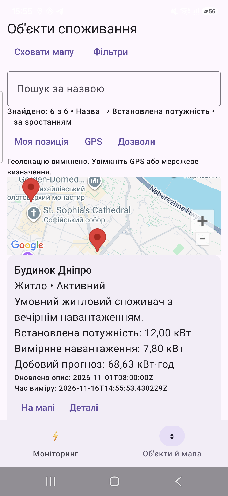
32-providers-disabled.png33-providers-recovered.png system-large-font
26-system-large-font.png 27-large-font-filter-reset.png28-large-font-filter-done.png
27-large-font-filter-reset.png28-large-font-filter-done.png